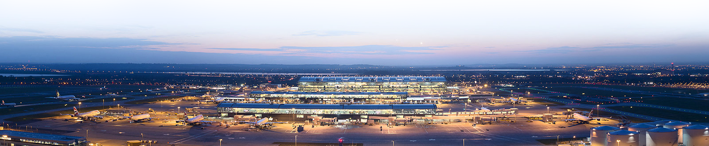

Heathrow T5 IT problems (6)

"Apparently the computer software told the baggage people that the flight had taken off.
So everyone in the plane
just watched as all their suitcases were taken back into the terminal instead of being loaded on."
After spending along time on planning and constructing the Terminal 5 of the London Heathrow Airport,
no one had doubts about the big future of the T5 and its success. But sometimes, little problems may
cause a lot of financial damage.
What Happened
During the first days of its opening, due to IT problems and lack of testing their programs, the Terminal 5 faced a "national humiliation". Once the staff were ready to work, some workers reported not being able to log on to the computer system, and others reported the problem to access the Resource Management System, which permits to load or unload flights. Even with the confusion, the working members continued to add luggage to the system, which after a limit (designed to hold 12,000 bags an hour) broke, and the airline was forced to stop the check-in of all flights to solve the issue of the backlog bags. Only during the first five days, the airline (British Airline) had cancelled 500 flights, misplaced more than 23,000 bags and had losses of £16m.
